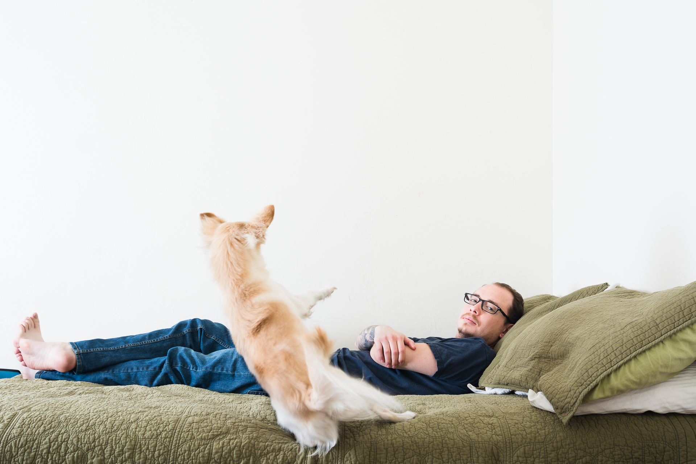

About
Hello. My name is Francisco Reynoso but call me Frankie.
I am a web and mobile designer with a BFA in Visual Communications from the University of Arizona. Currently working and living in sunny and beautiful Tucson, AZ.
At heart I am a modernist who has fallen in love with the delicacy of minimal design. I believe that beauty is in the finer details. The little things.
Experience
Current. Web Designer. The University of Arizona, UITS. 2014 – present
Education. Bachelor of Fine Arts, Visual Communications. The University of Arizona
Skills. HTML, CSS, Sass, JQuery, Git
Software. Adobe Experience Designer, Illustrator, Photoshop, InDesign


I design in HTML and CSS.
Adobe Experience Designer, Illustrator, and Photoshop are amongst the many tools I use to help me wireframe and mockup.
Typography made me interested in design.
For about two years, I used only Helvetica. No regrets.
I've been playing basketball since I was 12 years old.